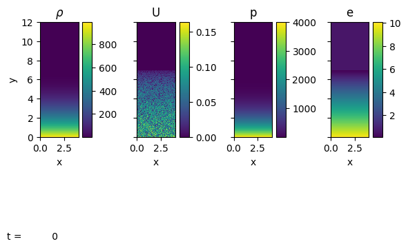
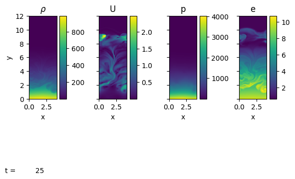
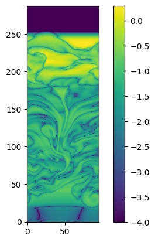

Simulating convection#
from pyro import Pyro
from pyro import compressible
We can model convection in a 2D plane-parallel atmosphere using pyro.
The convection problem setup initializes an isentropic atmosphere in hydrostatic equilibrium. The density at the base of the atmosphere is convection.dens_base and the density falls to a value convection.dens_cutoff. In regions above the atmosphere, the density is set to this cutoff value. This buffer region gives the atmosphere room to expand as heat is injected.
We’ll setup this problem using the unsplit compressible solver.
We can override the defaults of any of the runtime parameters by adding them to the params dictionary here:
p = Pyro("compressible")
params = {"mesh.nx": 96, "mesh.ny": 288}
p.initialize_problem("convection", inputs_dict=params)
The convection problem sets up a source term to the energy evolution equation of the form:
where \(S\) is the heating source (energy / mass / time). We take the form:
where \(y_0\) is the vertical location of the heating layer (controlled by convection.y_height), \(\sigma\) is the thickness of the heating layer (controlled by convection.thickness), and \(f_\mathrm{heat}\) is the amplitude of the heating rate (controlled by convection.e_rate).
We can inspect this source
compressible.problems.convection.source_terms??
Finally, we can see the value of all parameters that control this problem:
print(p)
Solver = compressible
Problem = convection
Simulation time = 0.0
Simulation step number = 0
Runtime Parameters
------------------
compressible.cvisc = 0.1
compressible.delta = 0.33
compressible.grav = -2.0
compressible.limiter = 2
compressible.riemann = HLLC
compressible.small_dens = 0.0001
compressible.small_eint = -1e+200
compressible.use_flattening = 1
compressible.z0 = 0.75
compressible.z1 = 0.85
convection.dens_base = 1000.0
convection.dens_cutoff = 0.001
convection.e_rate = 0.5
convection.scale_height = 2.0
convection.thickness = 0.25
convection.y_height = 2.0
driver.cfl = 0.8
driver.fix_dt = -1.0
driver.init_tstep_factor = 0.01
driver.max_dt_change = 2.0
driver.max_steps = 100000
driver.tmax = 25.0
driver.verbose = 0
eos.gamma = 1.4
io.basename = convection_
io.do_io = 0
io.dt_out = 0.5
io.force_final_output = 0
io.n_out = 100000000
mesh.grid_type = Cartesian2d
mesh.nx = 96
mesh.ny = 288
mesh.xlboundary = periodic
mesh.xmax = 4.0
mesh.xmin = 0.0
mesh.xrboundary = periodic
mesh.ylboundary = reflect
mesh.ymax = 12.0
mesh.ymin = 0.0
mesh.yrboundary = ambient
particles.do_particles = 0
particles.n_particles = 100
particles.particle_generator = grid
sponge.do_sponge = 1
sponge.sponge_rho_begin = 0.01
sponge.sponge_rho_full = 0.001
sponge.sponge_timescale = 0.01
vis.dovis = 0
vis.store_images = 0
Let’s view the initial state:
p.sim.dovis()

<Figure size 640x480 with 0 Axes>
We see that the initial velocity is just set as random noise–this will break the symmetry and start the convection.
Now we’ll run the simulation. We can do step-by-step if desired, but here we’ll just run to the maximum time we asked (driver.tmax).
Note
This can take a while, depending on your computer. If it is too slow, you can try lowering the resolution (mesh.nx and mesh.ny) even more that we already did above.
p.run_sim()
Now we see that considerable convection has set in. We are using a very coarse resolution here, so there is not much fine structure, but we see largescale velocity features.
p.sim.dovis()

<Figure size 640x480 with 0 Axes>
Since we are stratified, it is hard to see the detail in the energy field. Let’s instead look at the departure from the background value,
where the average \(\langle \cdot \rangle\) is over all cells at a constant height.
We’ll normalize this by \(e\) so we see the relative fluctuation.
import numpy as np
e = p.get_var("e")
e_avg = np.average(e, axis=0)
eprime_scaled = np.abs((e - e_avg[np.newaxis, :]) / e)
Note
pyro wraps NumPy arrays to provide additional methods for working with ghost cells and doing stencil operations. See: ArrayIndexer
import matplotlib.pyplot as plt
fig, ax = plt.subplots()
im = ax.imshow(np.log10(eprime_scaled.v().T), origin="lower", vmin=-4)
fig.colorbar(im, ax=ax)
<matplotlib.colorbar.Colorbar at 0x7fa6a6cd0260>

This shows that the departure from the background energy is small, but not zero.